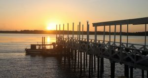
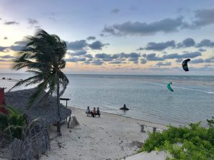
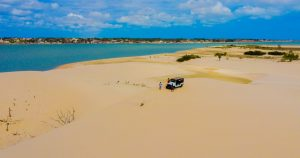

Píer (flutuante)

A princípio, o Píer de Camocim foi construído para trazer mais conforto e segurança no
embarque
e desembarque de passageiros, que utilizam as lanchas tanto para o Turismo como para deslocarem-se
para
comunidades interioranas do município, mas a beleza de sua estrutura o tornou rapidamente uma nova
atração turística. Os munícipes e visitantes são contemplados com um lindo nascer do sol e uma
apaixonante lua cheia, tornando este local uma parada obrigatória para o registro de uma linda foto.
Veja onde se encontra o pier Aqui
Praia da Tatajuba

Localizada no lado leste do município, entre Camocim e Jericoacoara, a Praia da Tatajuba é um dos
mais
belos paraísos tropicais do Nordeste, cenário preferido por praticantes do Kitesurf vindos de vários
lugares do mundo.
O Morro Branco existente no lugar conhecida como Duna do Funil é uma das dunas mais altas do litoral
cearense e proporciona aos seus visitantes o “esquibunda”, uma prática com aventura e
adrenalina. A partir de Camocim o percurso até Tatajuba pode ser feito pela orla marítima,
cruzando-se a
foz do rio Coreaú e também pela estrada CE085
Veja fotos da maravolhosa Praia da Tatajuba
Ilha do Amor

A Ilha da Testa Branca, também conhecida como Ilha do Amor, localiza-se em frente à cidade.
Contém manguezais, dunas e praias, os belíssimos espelhos d’água no período das chuvas, sendo muito
visitada por banhistas e por apreciadores da culinária regional. O acesso é através de balsas que
cruzam
o rio Coreaú. Da ilha tem-se uma bucólica visão da cidade, com casas à beira mar, os barcos
ancorados
próximo à borda da calçada que margeia o rio, as falésias avermelhadas e os coqueirais emoldurados
pelo
lindo céu azul.
Conheça a historia da ilha do amor